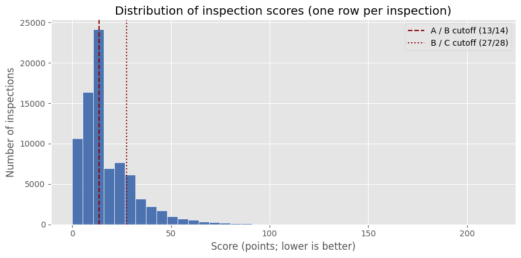
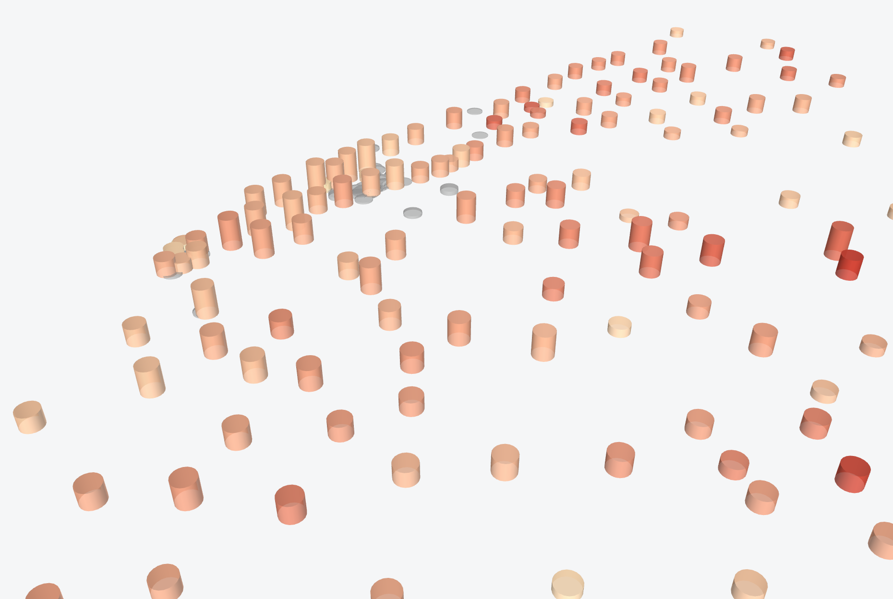

A bad grade is partly visible before the inspector arrives
Predicting restaurant inspection grades in New York City, using only what is known before the visit.
Rafiul Haider · Shadman Rahman
CS 667 Practical Data Science · Fall 2026 · Dr. Krishna Bathula, Pace University · October 2026
Column height: inspections per ZIP code. Color: share ending B or C.
Act I · The setup
The prediction is only allowed to use what exists before the visit
Known beforehand
Borough and location
Cuisine
Visit type (cycle, re-inspection, …)
The restaurant's own past inspections
Model
trained on earlier years, tested on later ones
A priority list
For DOHMH: which visits and follow-ups to schedule first
For operators: which risks to fix before the inspector arrives
Never used
Anything from the inspection being predicted: its score, its violations, its grade date. A model that reads the answer from the same visit has learned nothing anyone can act on.
Target: B or C = 1 vs A = 0
Act I · The setup
295,356 rows are not 295,356 inspections
295,356
rows
one row per violation, as NYC Open Data publishes it
96,897
inspections
grouped into one record per inspection
31,443
restaurants
each inspected one or more times
The grouping key
restaurant+date+inspection type
Score and grade repeat on every violation row, so any average taken at row level counts a nine-violation visit nine times.
Date alone is not enough: some restaurants have two different inspection types on the same day, and those would merge into one fake inspection.
Source: DOHMH New York City Restaurant Inspection Results, NYC Open Data (dataset 43nn-pn8j), raw file.
Act II · The surface lies
The median inspection passes — the tail is the story

Inspection score, one bar per score band (notebook figure). Lower is better: 0 to 13 points is an A. The shaded band is past the outlier fence.
13median score, exactly the top of the A band
17.9mean score, dragged up by the tail
4,095inspections past the fence at 46.5 points; the worst scored 214
Act II · The surface lies
43% of inspections have no grade, and that is structure, not dirt
Share of inspections with the field missing
A missing grade is mostly a pending grade: the inspection happened, and the letter is not settled yet.
The interim codes N, Z and P sit in the grade column for the same reason. The grading process has a timeline, and the file is a snapshot of it.
So we treat a missing grade as information about where that inspection sits in the timeline, and we don't fill it in.
Act II · The surface lies
Borough tells you almost nothing; cuisine tells you a little
Median score by borough
Points, lower is better. Bar color shows the grade that median would earn. 84 scored inspections with no borough recorded are not shown.
Median score, the most-inspected cuisines (click one)
Points, lower is better. B or C share: among modeled inspections (graded, first visits excluded).
Act III · The place is not the risk
The strongest correlation in the file is partly mechanical — and one is fake
Trap 1 · score ↔ critical violations, 0.86
The score is built from violation points, so this correlation is arithmetic. It is also the reason same-inspection fields are banned as predictors.
Trap 2 · latitude ↔ longitude, −1.00
The city runs southwest to northeast, so as one goes up the other comes down. That is the shape of the map, and it tells us nothing about restaurants.
Act III · The place is not the risk
The busiest places are not the riskiest places

Height = workload (inspections per ZIP) Color = risk (share ending B or C)
B or C share by ZIP code, flat view
0% → 30%+ B or Cnot enough inspections to judge (< 30 graded)
Worst reliable ZIP 11355: 33.3% of 342 graded. Citywide: 12.9%.
Act IV · The discovery
First visits never fail — the grade is settled at the second visit
what do you think?
Share of graded inspections ending B or C
0B or C grades on a first visit, out of 31,758 graded
Graded inspections by visit kind
A
B or C
Initial inspection
31,758
0
All other inspections
12,745
6,497
32.9% of graded re-inspections end B or C. A bad first visit leaves with the grade pending.
Before the reveal: what we expected
After: what the file says
Act V · The honest model
A restaurant's past is the fairest predictor of its next visit
One restaurant (camis 50098804), inspection by inspection · score in points, lower is better
known before this visit
prior count
earlier inspections
known before this visit
prior mean score
average of earlier scores
known before this visit
prior B/C share
earlier grades that were B or C
known before this visit
prior mean critical
earlier critical violations
known before this visit
days since prior
gap since the last visit
known before this visit
last score
the most recent score
known before this visit
has history
any earlier visit at all
ZIP code
left out on purpose: borough + coordinates carry location
Train · up to the end of 2024 · 9,111
Test · 2025 onward · 9,887
Act V · The honest model
The pipeline is plain on purpose — and PCA told us to keep it that way
1
One-hot encode
borough, grouped cuisine, inspection type
2
Median imputation
a restaurant with no history gets the typical value
3
Scaling
fitted on the training years, applied unchanged to the test years
Identical treatment for train and test: nothing is fitted on the test period.
PCA on the 11 numeric features: variance per component
PC1 (21.8%) is a past-performance axis; PC2 (16.6%) a history-depth axis. 8 of 11 components for 90%: the features are not copies of each other.
Act V · The honest model
The simplest model won — the forest memorized the training years
ROC-AUC: bars are the test years (2025 on), rings are the training years
Read the gap, not the bar: a ring far above its bar is a model that memorized. Dashed line: a coin flip.
The dummy model
66.8% accurate!
Better than our winner's accuracy on the same test years.
The dummy model
66.8% accurate
Caught: 0 of 3,284 bad inspections.
It predicted A for everything. That is why accuracy is not the measure here.
Act V · The honest model
The threshold is a policy choice, not a setting
82.2%recall: B or C inspections caught
37.6%precision: flags that end B or C
0.516F1
Catches ~82 of every 100 B or C inspections; about 6 in 10 flags still end A.
Test years (2025 on), 9,887 inspections
Predicted A
Predicted B or C (flagged)
Ended A
2,114correctly left alone
4,489flagged, ended A (a wasted visit)
Ended B or C
583missed bad inspections
2,701caught bad inspections
Act VI · The process and the point
We planned like Waterfall and worked like Agile
The deadline never moved. The plan underneath it did, once, on evidence.
Act VI · The process and the point
A prioritization tool, not a judge
0.644
ranking quality (test ROC-AUC, 2025 on)
82.2%
of bad inspections caught at the chosen threshold, 0.45
33.3%
worst reliable ZIP's B or C share (11355), vs 12.9% citywide
What it is
It orders a visit list from pre-visit information alone.
It does not label a restaurant. A flag is a reason to look first.
Next steps
Richer history features
Per-visit-type models
Probability calibration
Questions.The .pptx is the static record of this presentation; the HTML deck is the live version, with the animations, the threshold slider and the 3D map.
Backup B1 · Q&A
Risk by ZIP code holds up only where the counts do
Highest B or C share, reliable ZIPs (≥ 30 graded)
ZIP
Borough
Inspections
Graded
B or C
11355
Queens
822
342
33.3%
11419
Queens
449
203
28.1%
10030
Manhattan
93
46
23.9%
11368
Queens
1,023
499
23.6%
11428
Queens
152
77
23.4%
10026
Manhattan
216
103
23.3%
11354
Queens
1,844
793
23.2%
10466
Bronx
331
187
23.0%
10454
Bronx
342
162
21.6%
11372
Queens
1,481
678
20.6%
Lowest B or C share, reliable ZIPs
ZIP
Inspections
Graded
B or C
10281
57
39
0.0%
10121
189
163
1.2%
11430
136
103
1.9%
11429
98
64
3.1%
10464
93
61
3.3%
11693
92
60
3.3%
11239
80
48
4.2%
10006
167
104
4.8%
10119
79
42
4.8%
10280
76
42
4.8%
Backup B2 · Q&A
At the default 0.5 threshold the model misses more bad inspections
Predicted A
Predicted B or C
Ended A
3,137correctly left alone
3,466flagged, ended A
Ended B or C
954missed
2,330caught
71.0%recall at 0.5, vs 82.2% at the chosen 0.45
Logistic regression on the test years (2025 on). Rows are the true grade, columns the prediction. The notebook's own figure of this matrix is pred_confusion.png.
Backup B3 · Q&A
Cuisine pushes the model in both directions
Logistic regression coefficients for grouped cuisine (one-hot, relative to the other levels). Bars to the right push toward B or C; bars to the left push toward A.
Backup B4 · Q&A
What the maps cannot say
Inspections are not a random sample
Re-inspections happen because a first visit went badly, so places with more bad first visits get inspected more often. These maps show where inspectors went.
The ≥ 30 floor
A region earns a B or C rate only with at least 30 graded inspections: 178 of 223 ZIPs, 198 of 223 neighborhoods. The rest are grey: not enough inspections to judge.
Boundaries match, almost
Postal ZIPs and Census ZCTAs are cousins: awaiting export of inspections with a ZIP land in a boundary polygon. The neighborhood join placed 94,970 of 95,010 mapped inspections.
A rate describes a place's inspections
A high-rate ZIP describes the inspected activity there, not any single restaurant in it.